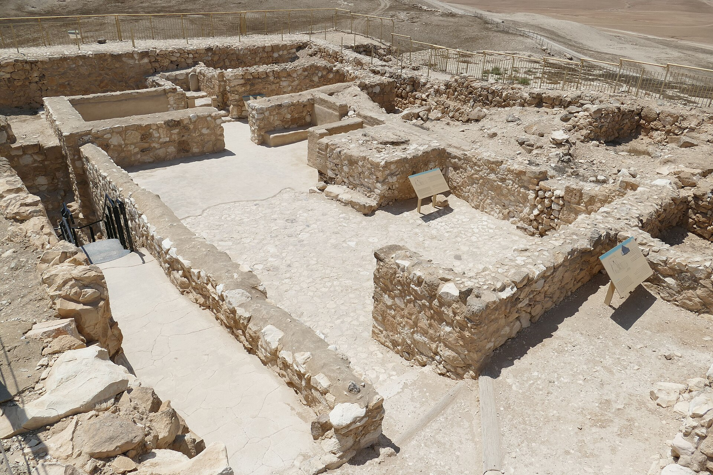
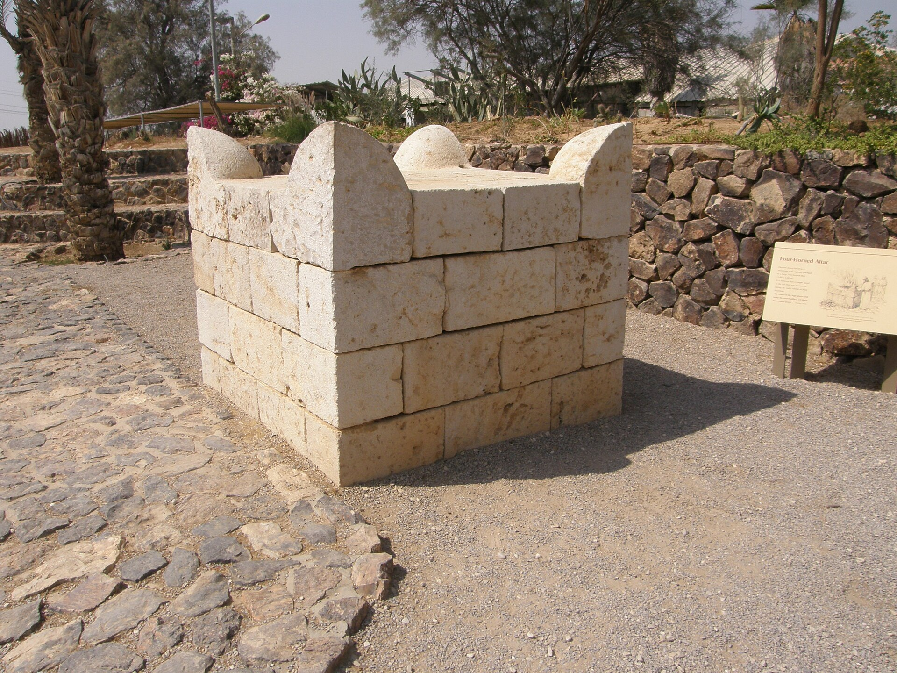
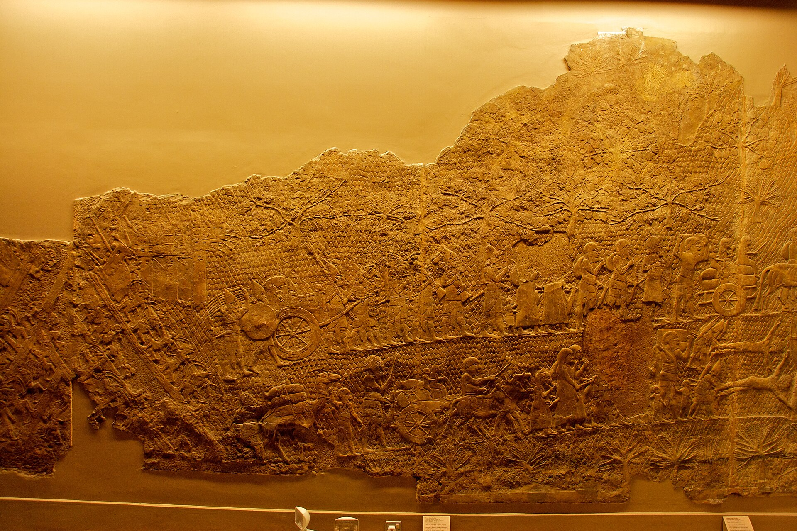

El elogio más alto del libro de los Reyes es para el rey cuya gran obra religiosa no ha dejado ni una capa de ceniza.
El libro de los Reyes reserva su mayor elogio para un solo hombre, y lo formula sin dejar margen: «No hubo antes de él rey semejante, que se volviera a YHWH con todo su corazón, con toda su alma y con todas sus fuerzas, conforme a toda la ley de Moisés; ni después de él se levantó otro igual.» El rey es Josías, y el capítulo que lo precede narra cómo llegó a merecerlo.
La escena es memorable. Durante unas obras en el Templo se encuentra un libro. Se lo leen al rey, el rey rasga sus vestiduras, y a continuación viene una de las páginas más detalladas del Antiguo Testamento: la purga. Se sacan del Templo los objetos de Baal y de Aserá y se queman en el valle del Cedrón; se derriban las habitaciones de los consagrados; se suprimen los santuarios locales; se profana el Tófet; se destruye el altar de Betel. Todo con nombres, lugares y verbos concretos.
El problema es que, cuando se busca esa purga en el suelo, no está.
Digámoslo con la precisión que el asunto exige: no se ha identificado ningún santuario judaíta demolido que pueda fecharse con seguridad en el reinado de Josías, entre 640 y 609 a.C. No es que la evidencia sea ambigua. Es que los candidatos, examinados uno a uno, se caen por razones distintas.
El templo de Arad es el candidato clásico: un santuario judaíta con patio, altar de piedras sin labrar y un nicho con estelas y altares de incienso. Su desmantelamiento se sitúa hoy a finales del siglo VIII, según Ze'ev Herzog; Ussishkin lo lleva incluso al siglo VII o VI y concluye que «difícilmente puede relacionarse con las reformas religiosas» de ningún rey. En ninguna de las dos lecturas cae en el reinado de Josías.

El altar cornudo de Tel Beer-Sheva tiene dos problemas acumulados. Se desmontó también a finales del siglo VIII, y además nunca se halló el santuario al que perteneció: lo que se encontró fueron sillares reutilizados, dispersos, con los que después se reconstruyó el altar que hoy se expone. Por añadidura, la identificación del yacimiento con la Beer-Sheva bíblica es discutible.

Betel, cuya destrucción por Josías narra 2 Reyes 23:15 con especial detalle, no tiene confirmación estratigráfica de esa destrucción. Y Tel Motza, un templo del siglo IX situado a pocos kilómetros de Jerusalén, se abandona en un momento que no se correlaciona con ninguna reforma.
Hay incluso un dato que apunta en la dirección contraria. Los relieves de Laquis muestran, entre el botín que los asirios se llevan en 701, incensarios cultuales. Es decir: en la segunda ciudad de Judá había culto activo con su parafernalia en la fecha en que la tradición sitúa la reforma centralizadora de Ezequías, el bisabuelo de Josías y su modelo.

Y aquí aparece el episodio más interesante de todo el expediente, precisamente porque no está resuelto. Merece una sección propia porque, si una de las dos posturas se consolida, sería la primera evidencia arqueológica directa de una desacralización deliberada de un santuario judaíta.
Saar Ganor e Igor Kreimerman, excavando el complejo de la puerta de Laquis, sostienen que en la cámara oriental del cuerpo de guardia interior del Nivel III hubo un santuario: una hornacina y un altar de cuernos. Y sostienen algo más: que ese santuario fue desactivado de forma intencionada, porque los cuernos del altar aparecen recortados, y porque junto al altar se colocó una letrina. Cortar los cuernos inutiliza el altar; poner una letrina al lado lo profana. La lectura que proponen es que se trata de la huella material de la reforma de Ezequías.
David Ussishkin, que dirigió las excavaciones anteriores del yacimiento, lo rechaza frontalmente. Sostiene que los supuestos altares son bloques de caliza toscamente labrados pertenecientes a un tabique enlucido, y que por tanto no hubo santuario, ni cuernos recortados con intención, ni desacralización. Publicó su respuesta en BASOR en 2021, y los excavadores han seguido publicando su interpretación.
El asunto sigue sin resolverse, y conviene decir por qué importa tanto. La reforma cúltica de Ezequías y la de Josías son, hasta hoy, acontecimientos exclusivamente textuales. Toda la discusión sobre su historicidad se ha librado con argumentos literarios y con ausencias arqueológicas. Un altar con los cuernos cortados y una letrina al lado sería la primera vez que el suelo dice algo directo sobre el asunto. Por eso hay que resistirse a la tentación de darlo por bueno antes de tiempo.
Es tentador reducir esto a creyentes y escépticos. La discusión real tiene más de dos posiciones, y la más citada hoy es intermedia.
La posición intermedia y hoy muy citada. Sí hubo algo, pero fue una centralización político-económica del culto estatal en Jerusalén, no una purga religiosa programática de los santuarios locales. Reformula la pregunta: en vez de «hubo reforma o no», propone precisar qué clase de medida es la que la evidencia permite.
No hubo reforma cúltica integral bajo Ezequías: el pasaje de 2 Reyes 18:4 y 22 es composición deuteronomista según el patrón de la ley deuterónica, apoyada como máximo en una nota archivística sobre la serpiente de bronce. Por extensión, el relato de Josías está construido con la misma técnica.
Aceptan un núcleo histórico y hacen de la corte de Josías el motor de la redacción deuteronomista. Pero rebajan drásticamente la expansión territorial josiánica: no hubo reconquista del norte, y por tanto la geografía de la purga que narra el texto es en buena parte proyección.
Consideran el relato una proyección postexílica sin núcleo histórico verificable. Es una posición minoritaria, pero conviene tenerla en el cuadro para ver la amplitud real del desacuerdo.
Si su lectura del altar con los cuernos recortados y la letrina se consolida, sería el primer indicio arqueológico directo de una desacralización deliberada, y desplazaría el debate entero hacia la derecha del medidor. Ussishkin lo niega. Sin resolver.
La formulación que hoy se puede sostener sin forzar nada es esta: el reinado de Josías es histórico; la existencia de alguna medida de centralización cúltica es plausible; y la reforma tal como la narra 2 Reyes 23, con su iconoclastia detallada y su alcance geográfico, es una construcción literaria que la arqueología no corrobora. Ni «no pasó nada» ni «pasó todo lo que está escrito».
Falta explicar la otra mitad del problema, que es literaria. Si la reforma no se ve en el suelo, ¿por qué el texto le dedica tanto espacio y tanta precisión?
La respuesta que la crítica ha construido a lo largo de ochenta años es que Josías es el punto de fuga de toda la obra. Martin Noth propuso en 1943 que Deuteronomio y los libros históricos hasta 2 Reyes forman una única obra compuesta en el exilio para explicar teológicamente la catástrofe. Frank Moore Cross reformuló el modelo en 1973 en dos ediciones: una josiánica, de hacia 620, optimista y centrada en la promesa dinástica davídica, cuyo clímax es precisamente el elogio de Josías; y una revisión exílica, de hacia 550, que añade el marco de juicio y explica por qué la reforma no evitó el desastre —de ahí los pasajes que hacen de Manasés la causa irreversible.
La escuela de Gotinga propuso en su lugar estratos temáticos, todos exílicos o posteriores. Y Thomas Römer, hoy la referencia sintética, mantiene el proyecto pero lo reorganiza en tres grandes fases de producción escribal —neoasiria, neobabilónica y persa—, advirtiendo además que la multiplicación de capas se vuelve arbitraria sin criterios claros de delimitación. Otros, como Ernst Axel Knauf o Reinhard Kratz, niegan que exista una obra unitaria.
Estos modelos son herramientas explicativas productivas y ampliamente usadas, no hechos establecidos. La asignación de versículos concretos a una edición josiánica o a una revisión exílica es hipótesis de trabajo, no dato. Lo que sí explican bien, y es su mejor argumento, es un fenómeno textual visible a simple vista: la tensión entre una promesa incondicional a la dinastía de David y la destrucción efectiva de Jerusalén. Algo tuvo que reescribirse cuando lo segundo ocurrió.
Si el modelo es correcto en su planteamiento general, entonces el elogio de Josías no es una valoración retrospectiva: es propaganda contemporánea, escrita cuando Josías vivía y su proyecto estaba en marcha. Y el resto del libro —los veinte reyes evaluados uno por uno según si suprimieron o no los santuarios locales— está construido desde ese presente hacia atrás.
Lo cual convierte la pregunta «¿ocurrió la reforma?» en una pregunta parcialmente mal planteada. Lo que sin duda ocurrió fue una operación intelectual en la corte de Jerusalén en el último tercio del siglo VII: alguien decidió que la historia entera de los dos reinos debía leerse como la historia de una infidelidad, y la escribió así. Esa operación dejó menos huellas en la tierra que en la biblioteca, pero es la que sigue determinando cómo lee la Biblia media humanidad.
Doce años después de la muerte de Josías, el aparato entero se derrumbó. De eso trata la entrega siguiente.
Sobre Arad: Z. Herzog y la discusión de D. Ussishkin sobre la fecha del desmantelamiento del santuario. Sobre el santuario de la puerta de Laquis: S. Ganor e I. Kreimerman, BASOR 381 (2019) y 'Atiqot 111 (2023), frente a D. Ussishkin, «Was a Gate Shrine Built at the Level III Inner City Gate at Lachish?», BASOR 385 (2021), 153-170.
Sobre la historicidad de las reformas: C. Uehlinger, «Was There a Cult Reform under King Josiah? The Case for a Well-Grounded Minimum» (2005); N. Naaman, «The Debated Historicity of Hezekiah's Reform»; C. Levin y L. Fried para las posiciones minimalistas; I. Finkelstein y N. A. Silberman, The Bible Unearthed (2001).
Sobre la hipótesis deuteronomista: M. Noth, Überlieferungsgeschichtliche Studien (1943); F. M. Cross, Canaanite Myth and Hebrew Epic (1973); R. Smend, W. Dietrich y T. Veijola para la escuela de Gotinga; y T. Römer, The So-Called Deuteronomistic History (2005), como síntesis actual.